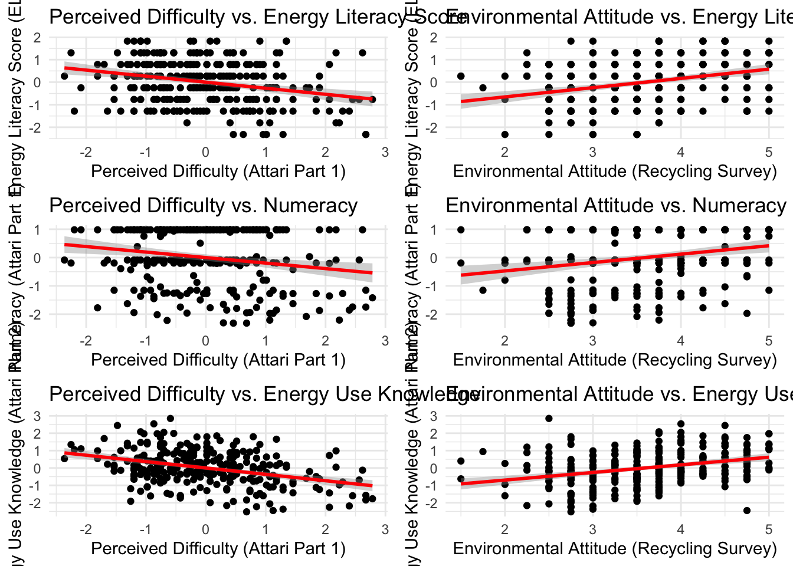
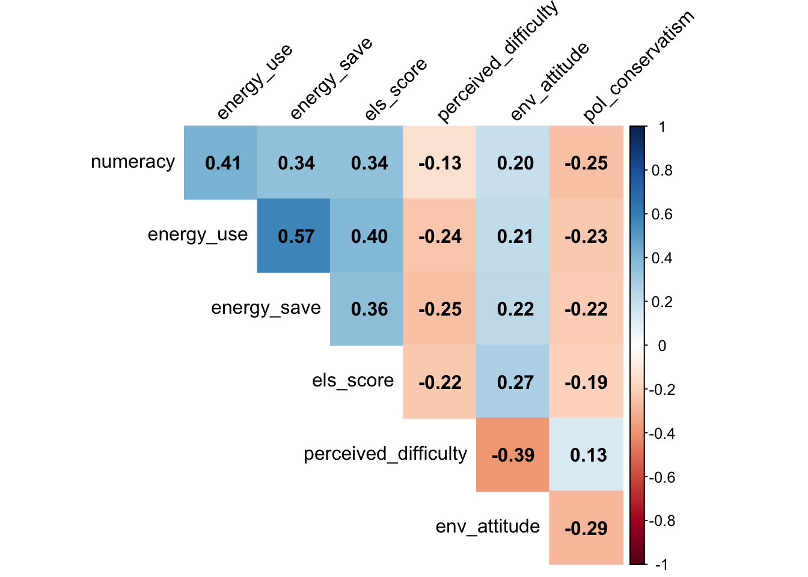
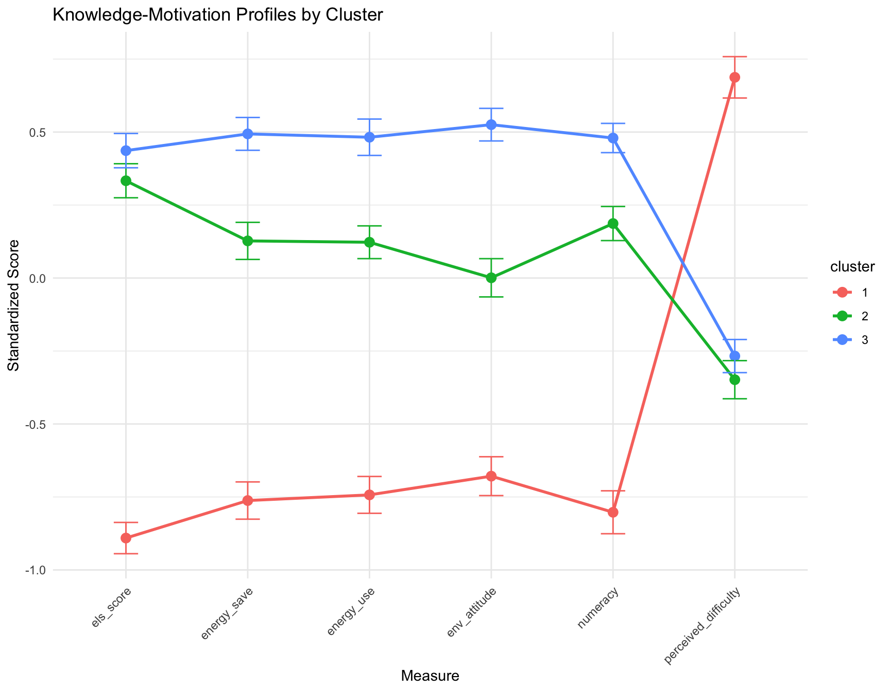

pacman::p_load(dplyr,purrr,tidyr,here, haven,tibble,ggplot2,ggh4x,lme4,knitr,kableExtra,gt,pander,flextable,ggh4x,psych,corrplot,factoextra)options(digits=2, scipen=999, dplyr.summarise.inform=FALSE)source(here("scripts","survey_functions.R"))draw<-readRDS(here("data","draw.rds"))dinst<-readRDS(here("data","dinst.rds"))# Attari Energy Survey (Part 1)aes1<-draw|>select(id,ATT01:ATT18)aes2<-dinst|>select(id,ATT01:ATT18)aes_combined<-bind_rows(aes1, aes2)att_useSave<-draw|>select(id,ATT19:ATT33)att_useSave2<-dinst|>select(id,ATT19:ATT33)att2_combined<-bind_rows(att_useSave, att_useSave2)els1<-draw|>select(id,ELS01:ELS08)els2<-dinst|>select(id,ELS01:ELS08)els<-bind_rows(els1,els2)rs1<-draw|>select(id,RS01:RS06)rs2<-dinst|>select(id,RS01:RS06)rs<-bind_rows(rs1,rs2)attari1<-analyze_attari_survey_part1(aes_combined)attari2_scores<-analyze_attari_survey(att2_combined)els_scores<-analyze_els_survey(els)rs_scores<-analyze_recycling_survey(rs)# Combine all scores into one dataframecombined_scores<-attari1%>%left_join(attari2_scores, by="id")%>%left_join(els_scores, by="id")%>%left_join(rs_scores, by="id")# Rename columns for claritynames(combined_scores)<-c("id", "perceived_difficulty", "numeracy", "energy_use", "energy_save", "els_accuracy", "els_score","env_attitude", "env_attitude_z","pol_conservatism", "pol_conservatism_z")# 1. Cluster Analysis# Prepare data for clustering (select relevant variables and scale)cluster_data<-combined_scores%>%select(perceived_difficulty, numeracy, energy_use, energy_save, els_score, env_attitude_z, pol_conservatism_z)%>%na.omit()%>%scale()# Determine optimal number of clusters using the elbow methodfviz_nbclust(cluster_data, kmeans, method ="wss")+labs(title ="Elbow Method for Optimal k", x ="Number of Clusters k")
Display code
# Perform k-means clustering (e.g., with 3 clusters)set.seed(123)km_result<-kmeans(cluster_data, centers =3, nstart =25)# Visualize the clustersfviz_cluster(km_result, data =cluster_data, geom ="point", ellipse.type ="convex", ggtheme =theme_bw())+labs(title ="K-means Clustering of Subjects")
Display code
# Add cluster assignments to the main dataframecombined_scores$cluster<-as.factor(km_result$cluster)# 2. Enhanced Factor Analysis# Scree plot to determine the number of factorsfa_data<-combined_scores%>%select(perceived_difficulty, numeracy, energy_use, energy_save, els_score, env_attitude_z, pol_conservatism_z)%>%na.omit()scree(fa_data)
Factor Analysis using method = minres
Call: fa(r = fa_data, nfactors = 2, rotate = "varimax")
Standardized loadings (pattern matrix) based upon correlation matrix
item MR1 MR2 h2 u2 com
energy_use 3 0.77 0.61 0.3856 1.1
energy_save 4 0.68 0.49 0.5146 1.1
numeracy 2 0.52 0.29 0.7067 1.2
els_score 5 0.50 0.30 0.6954 1.4
pol_conservatism_z 7 0.14 0.8570 2.0
env_attitude_z 6 0.99 1.00 0.0035 1.0
perceived_difficulty 1 -0.36 0.19 0.8120 1.7
MR1 MR2
SS loadings 1.72 1.31
Proportion Var 0.25 0.19
Cumulative Var 0.25 0.43
Proportion Explained 0.57 0.43
Cumulative Proportion 0.57 1.00
Mean item complexity = 1.4
Test of the hypothesis that 2 factors are sufficient.
df null model = 21 with the objective function = 1.3 with Chi Square = 760
df of the model are 8 and the objective function was 0.03
The root mean square of the residuals (RMSR) is 0.03
The df corrected root mean square of the residuals is 0.04
The harmonic n.obs is 586 with the empirical chi square 17 with prob < 0.035
The total n.obs was 586 with Likelihood Chi Square = 17 with prob < 0.029
Tucker Lewis Index of factoring reliability = 0.97
RMSEA index = 0.044 and the 90 % confidence intervals are 0.014 0.073
BIC = -34
Fit based upon off diagonal values = 0.99
Measures of factor score adequacy
MR1 MR2
Correlation of (regression) scores with factors 0.87 1.00
Multiple R square of scores with factors 0.76 0.99
Minimum correlation of possible factor scores 0.52 0.99
Display code
# 3. Enhanced Regression Models# Model predicting ELS from motivation, controlling for other knowledge scoresmodel_els_enhanced<-lm(els_score~perceived_difficulty+env_attitude_z+pol_conservatism_z+numeracy+energy_use+energy_save, data =combined_scores)summary(model_els_enhanced)
# 4. Interaction Effects in Regression# Example: Interaction between environmental attitude and perceived difficulty on ELSmodel_interaction<-lm(els_score~perceived_difficulty*env_attitude_z, data =combined_scores)summary(model_interaction)
Call:
lm(formula = els_score ~ perceived_difficulty * env_attitude_z,
data = combined_scores)
Residuals:
Min 1Q Median 3Q Max
-3.169 -0.678 0.026 0.689 2.285
Coefficients:
Estimate Std. Error t value Pr(>|t|)
(Intercept) -0.0130 0.0423 -0.31 0.7592
perceived_difficulty -0.1383 0.0428 -3.23 0.0013 **
env_attitude_z 0.2187 0.0428 5.11 0.00000045 ***
perceived_difficulty:env_attitude_z -0.0337 0.0393 -0.86 0.3915
---
Signif. codes: 0 '***' 0.001 '**' 0.01 '*' 0.05 '.' 0.1 ' ' 1
Residual standard error: 0.96 on 582 degrees of freedom
Multiple R-squared: 0.0915, Adjusted R-squared: 0.0868
F-statistic: 19.5 on 3 and 582 DF, p-value: 0.00000000000438
Display code
# Visualize the interaction (example)ggplot(combined_scores, aes(x =perceived_difficulty, y =els_score, color =env_attitude_z))+geom_point()+geom_smooth(method ="lm", se =FALSE)+scale_color_gradient(low ="blue", high ="red")+labs(title ="Interaction of Perceived Difficulty and Environmental Attitude on ELS", x ="Perceived Difficulty", y ="Energy Literacy Score")+theme_minimal()
Display code
combined_df<-attari1%>%full_join(attari2_scores, by ="id")%>%full_join(els_scores, by ="id")%>%full_join(rs_scores, by ="id")# 1. Create knowledge profiles using cluster analysisknowledge_vars<-combined_df%>%select(numeracy_score, relative_energy_use_score, relative_energy_save_score, els)set.seed(123)clusters<-kmeans(scale(knowledge_vars), centers=3)# Add cluster membership to datacombined_df$knowledge_cluster<-as.factor(clusters$cluster)# Compare motivation scores across clusterscluster_comparison<-combined_df%>%group_by(knowledge_cluster)%>%summarise( mean_env_attitude =mean(env_attitude, na.rm=TRUE), mean_difficulty =mean(perceived_difficulty_score, na.rm=TRUE))# 2. Test for non-linear relationshipslibrary(mgcv)gam_model<-gam(els~s(env_attitude)+s(perceived_difficulty_score), data=combined_df)# 3. Create interaction model between knowledge and motivationinteraction_model<-lm(els~env_attitude*perceived_difficulty_score+numeracy_score, data=combined_df)library(gridExtra)library(factoextra)library(mgcv)library(corrplot)# 1. Enhanced Correlation Plotcor_matrix<-combined_df%>%select(numeracy_score, relative_energy_use_score, relative_energy_save_score, els, perceived_difficulty_score, env_attitude, pol_conservatism_z)%>%cor(use ="pairwise.complete.obs")corrplot(cor_matrix, method ="color", type ="upper", addCoef.col ="black", tl.col ="black", tl.srt =45, diag =FALSE, col =colorRampPalette(c("#6D9EC1", "white", "#E46726"))(200))
Display code
# 2. Knowledge Profile Clustering# Standardize knowledge variablesknowledge_vars<-combined_df%>%select(numeracy_score, relative_energy_use_score, relative_energy_save_score, els)%>%scale()# Determine optimal number of clustersset.seed(123)wss<-sapply(1:10, function(k){kmeans(knowledge_vars, centers=k)$tot.withinss})# Perform k-means clusteringk<-3# Based on elbow plot inspectionclusters<-kmeans(knowledge_vars, centers=k)# Add cluster membership to datacombined_df$knowledge_cluster<-as.factor(clusters$cluster)# Visualize clusterspca_result<-prcomp(knowledge_vars)cluster_df<-data.frame( PC1 =pca_result$x[,1], PC2 =pca_result$x[,2], Cluster =combined_df$knowledge_cluster)# Create cluster visualizationp_clusters<-ggplot(cluster_df, aes(x=PC1, y=PC2, color=Cluster))+geom_point(alpha=0.6)+theme_minimal()+labs(title="Knowledge Profiles Clustering", x="First Principal Component", y="Second Principal Component")p_clusters
# Example: K-means clustering on knowledge + motivationlibrary(dplyr)library(factoextra)# for visualization of clusters# Subset your knowledge & motivation columnscluster_data<-combined_df%>%select(numeracy_score, relative_energy_use_score, relative_energy_save_score,els, perceived_difficulty_score, env_attitude, pol_conservatism)%>%na.omit()# Scale themcluster_data_scaled<-scale(cluster_data)# Decide on number of clusters (e.g. 2–5) – use e.g. Elbow methodfviz_nbclust(cluster_data_scaled, kmeans, method ="wss")

Display code
# Suppose we choose 3 clusters as a demonstrationset.seed(123)km_result<-kmeans(cluster_data_scaled, centers =3, nstart =25)# Add cluster membership back into the original datacluster_data$cluster<-factor(km_result$cluster)# Visualize clusters in 2D (using PCA behind the scenes)fviz_cluster(km_result, data =cluster_data_scaled, geom ="point", ellipse.type ="convex")+theme_minimal()+labs(title ="K-means Clusters of Knowledge & Motivation Variables")
Display code
# 1. Grab relevant variablescluster_data<-combined_df%>%select(numeracy_score, relative_energy_use_score, relative_energy_save_score,els, perceived_difficulty_score, env_attitude, pol_conservatism)%>%na.omit()# 2. Standardize/scale themcluster_data_scaled<-scale(cluster_data)# 3. Determine the optimal number of clusters (Elbow or Silhouette methods)fviz_nbclust(cluster_data_scaled, kmeans, method ="wss")+theme_minimal()
Display code
# 4. Run k-means with your chosen number of clusters (say k = 3)set.seed(123)km_res<-kmeans(cluster_data_scaled, centers =3, nstart =25)# 5. Visualizefviz_cluster(km_res, data =cluster_data_scaled, geom ="point", ellipse.type ="convex")+theme_minimal()+labs(title ="K-means Clusters of Knowledge & Motivation Variables")
# Example of hierarchical clustering if that is preferreddist_mat<-dist(cluster_data_scaled, method ="euclidean")hc_res<-hclust(dist_mat, method ="ward.D2")plot(hc_res, main ="Dendrogram of Hierarchical Clustering")

Display code
# Cut tree at chosen kclusters<-cutree(hc_res, k =3)table(clusters)
clusters
1 2 3
211 65 310
Display code
# Example mediation: knowledge -> perceived_difficulty -> env_attitudelibrary(lavaan)model_mediation<-' # direct effect env_attitude ~ c*els # mediator perceived_difficulty_score ~ a*els env_attitude ~ b*perceived_difficulty_score # indirect effect ab := a*b # total effect total := c + (a*b)'fit_mediation<-sem(model_mediation, data =combined_df, missing="fiml")summary(fit_mediation, fit.measures=TRUE, standardized=TRUE, rsquare=TRUE)
lavaan 0.6-19 ended normally after 1 iteration
Estimator ML
Optimization method NLMINB
Number of model parameters 7
Number of observations 586
Number of missing patterns 1
Model Test User Model:
Test statistic 0.000
Degrees of freedom 0
Model Test Baseline Model:
Test statistic 149.690
Degrees of freedom 3
P-value 0.000
User Model versus Baseline Model:
Comparative Fit Index (CFI) 1.000
Tucker-Lewis Index (TLI) 1.000
Robust Comparative Fit Index (CFI) 1.000
Robust Tucker-Lewis Index (TLI) 1.000
Loglikelihood and Information Criteria:
Loglikelihood user model (H0) -1434.548
Loglikelihood unrestricted model (H1) -1434.548
Akaike (AIC) 2883.095
Bayesian (BIC) 2913.709
Sample-size adjusted Bayesian (SABIC) 2891.486
Root Mean Square Error of Approximation:
RMSEA 0.000
90 Percent confidence interval - lower 0.000
90 Percent confidence interval - upper 0.000
P-value H_0: RMSEA <= 0.050 NA
P-value H_0: RMSEA >= 0.080 NA
Robust RMSEA 0.000
90 Percent confidence interval - lower 0.000
90 Percent confidence interval - upper 0.000
P-value H_0: Robust RMSEA <= 0.050 NA
P-value H_0: Robust RMSEA >= 0.080 NA
Standardized Root Mean Square Residual:
SRMR 0.000
Parameter Estimates:
Standard errors Standard
Information Observed
Observed information based on Hessian
Regressions:
Estimate Std.Err z-value P(>|z|) Std.lv
env_attitude ~
els (c) 0.152 0.029 5.151 0.000 0.152
perceived_difficulty_score ~
els (a) -0.222 0.040 -5.506 0.000 -0.222
env_attitude ~
prcvd_dff_ (b) -0.263 0.029 -8.934 0.000 -0.263
Std.all
0.197
-0.222
-0.342
Intercepts:
Estimate Std.Err z-value P(>|z|) Std.lv Std.all
.env_attitude 3.583 0.029 124.796 0.000 3.583 4.653
.prcvd_dffclty_ 0.000 0.040 0.000 1.000 0.000 0.000
Variances:
Estimate Std.Err z-value P(>|z|) Std.lv Std.all
.env_attitude 0.483 0.028 17.117 0.000 0.483 0.815
.prcvd_dffclty_ 0.949 0.055 17.117 0.000 0.949 0.951
R-Square:
Estimate
env_attitude 0.185
prcvd_dffclty_ 0.049
Defined Parameters:
Estimate Std.Err z-value P(>|z|) Std.lv Std.all
ab 0.058 0.012 4.687 0.000 0.058 0.076
total 0.210 0.031 6.862 0.000 0.210 0.273
Display code
combined_scores<-combined_df%>%mutate(# Example composite for knowledge: average of (z-scored) numeracy, # energy_use, energy_save, ELS. # (You can also sum them, but average is convenient.) composite_knowledge =rowMeans(cbind(numeracy_score, relative_energy_use_score, relative_energy_save_score, els), na.rm =FALSE# If a row has missing for any item, result = NA),# Example composite for motivation: # env_attitude might be already in a favorable direction, but if # perceived_difficulty is "difficulty," consider reversing so that # higher = "less difficulty" = "higher motivation."# For example: reverse_diff = (-1)*perceived_difficulty_score# Then average with env_attitude (if you want them combined).# If you are including pol_conservatism as well, you must decide # how to handle that in the composite. Possibly reverse-coded # so that higher # = more liberal or more "pro-environment" stance. # (It's your theoretical call.)# For now, let's do a small composite with environmental attitude # and reversed difficulty: reverse_diff =-1*perceived_difficulty_score, composite_motivation =rowMeans(cbind(env_attitude, reverse_diff), na.rm =FALSE))library(factoextra)# for nice cluster visualizations# We'll create a small data frame with just the two composites, # removing any incomplete casescluster_data<-combined_scores%>%select(composite_knowledge, composite_motivation)%>%na.omit()# Decide on number of clusters "k". Let’s try k = 3:set.seed(123)km3<-kmeans(cluster_data, centers =3, nstart =25)# Inspect resultskm3
# Visualizefviz_cluster(km3, data =cluster_data, geom ="point", ellipse.type ="convex")+theme_minimal()+labs(title ="K-means (k=3) Clustering on Knowledge vs. Motivation")
Display code
combined_scores$cluster<-factor(km3$cluster)# Compare mean knowledge & motivation by clustercombined_scores%>%group_by(cluster)%>%summarize( n =n(), mean_knowledge =mean(composite_knowledge, na.rm =TRUE), mean_motivation =mean(composite_motivation, na.rm =TRUE))
# 2. Canonical Correlation Analysis between Knowledge and Motivation Setslibrary(CCA)select<-dplyr::select# Prepare matricesknowledge_vars<-combined_scores%>%select(numeracy, energy_use, energy_save, els_score)%>%as.matrix()motivation_vars<-combined_scores%>%select(env_attitude, perceived_difficulty, pol_conservatism)%>%as.matrix()# Perform CCAcc_result<-cancor(knowledge_vars, motivation_vars)# 3. Network Analysis to Visualize Variable Relationshipslibrary(qgraph)# Create correlation matrixcor_matrix<-cor(combined_scores%>%select(numeracy, energy_use, energy_save, els_score,env_attitude, perceived_difficulty, pol_conservatism), use ="pairwise.complete.obs")# Create network plotqgraph(cor_matrix, layout ="spring", groups =list(Knowledge =1:4, Motivation =5:7), color =c(rep("lightblue", 4), rep("lightgreen", 3)))
Display code
# 4. Mixed Effects Model to Account for Potential Group-Level Effectslibrary(lme4)mixed_model<-lmer(els_score~env_attitude+perceived_difficulty+(1|cluster), data =combined_scores)summary(mixed_model)
Linear mixed model fit by REML ['lmerMod']
Formula: els_score ~ env_attitude + perceived_difficulty + (1 | cluster)
Data: combined_scores
REML criterion at convergence: 1432
Scaled residuals:
Min 1Q Median 3Q Max
-3.446 -0.743 0.019 0.716 2.054
Random effects:
Groups Name Variance Std.Dev.
cluster (Intercept) 0.583 0.763
Residual 0.650 0.806
Number of obs: 586, groups: cluster, 3
Fixed effects:
Estimate Std. Error t value
(Intercept) -0.1027 0.4782 -0.21
env_attitude 0.0172 0.0515 0.33
perceived_difficulty 0.0600 0.0386 1.55
Correlation of Fixed Effects:
(Intr) env_tt
env_attitud -0.382
prcvd_dffcl -0.095 0.244
Display code
# 5. Structural Equation Model for Path Analysislibrary(lavaan)# Define modelmodel<-' # Measurement model knowledge =~ numeracy + energy_use + energy_save + els_score motivation =~ env_attitude + perceived_difficulty + pol_conservatism # Structural model knowledge ~ motivation'# Fit modelfit<-sem(model, data =combined_scores)summary(fit, standardized =TRUE, fit.measures =TRUE)
lavaan 0.6-19 ended normally after 36 iterations
Estimator ML
Optimization method NLMINB
Number of model parameters 15
Number of observations 586
Model Test User Model:
Test statistic 48.061
Degrees of freedom 13
P-value (Chi-square) 0.000
Model Test Baseline Model:
Test statistic 765.733
Degrees of freedom 21
P-value 0.000
User Model versus Baseline Model:
Comparative Fit Index (CFI) 0.953
Tucker-Lewis Index (TLI) 0.924
Loglikelihood and Information Criteria:
Loglikelihood user model (H0) -5510.805
Loglikelihood unrestricted model (H1) -5486.775
Akaike (AIC) 11051.610
Bayesian (BIC) 11117.210
Sample-size adjusted Bayesian (SABIC) 11069.590
Root Mean Square Error of Approximation:
RMSEA 0.068
90 Percent confidence interval - lower 0.048
90 Percent confidence interval - upper 0.089
P-value H_0: RMSEA <= 0.050 0.068
P-value H_0: RMSEA >= 0.080 0.180
Standardized Root Mean Square Residual:
SRMR 0.045
Parameter Estimates:
Standard errors Standard
Information Expected
Information saturated (h1) model Structured
Latent Variables:
Estimate Std.Err z-value P(>|z|) Std.lv Std.all
knowledge =~
numeracy 1.000 0.534 0.534
energy_use 1.441 0.131 10.978 0.000 0.769 0.769
energy_save 1.331 0.123 10.786 0.000 0.710 0.711
els_score 1.024 0.109 9.393 0.000 0.546 0.547
motivation =~
env_attitude 1.000 0.506 0.657
percvd_dffclty -1.068 0.142 -7.515 0.000 -0.540 -0.541
pol_conservtsm -1.159 0.175 -6.635 0.000 -0.586 -0.413
Regressions:
Estimate Std.Err z-value P(>|z|) Std.lv Std.all
knowledge ~
motivation 0.609 0.094 6.497 0.000 0.577 0.577
Variances:
Estimate Std.Err z-value P(>|z|) Std.lv Std.all
.numeracy 0.714 0.047 15.120 0.000 0.714 0.715
.energy_use 0.408 0.042 9.619 0.000 0.408 0.408
.energy_save 0.494 0.042 11.665 0.000 0.494 0.495
.els_score 0.700 0.047 14.976 0.000 0.700 0.701
.env_attitude 0.337 0.037 9.074 0.000 0.337 0.569
.percvd_dffclty 0.706 0.056 12.591 0.000 0.706 0.708
.pol_conservtsm 1.668 0.111 14.976 0.000 1.668 0.829
.knowledge 0.190 0.034 5.553 0.000 0.667 0.667
motivation 0.256 0.042 6.021 0.000 1.000 1.000
Display code
# 6. Classification Tree for Predicting Knowledge Levelslibrary(rpart)library(rpart.plot)# Create binary knowledge indicator (high/low) based on median splitcombined_scores$knowledge_level<-factor(ifelse(combined_scores$composite_knowledge>median(combined_scores$composite_knowledge, na.rm =TRUE),"High", "Low"))# Fit treetree_model<-rpart(knowledge_level~env_attitude+perceived_difficulty+pol_conservatism, data =combined_scores)# Plot treerpart.plot(tree_model, extra =1)
lavaan 0.6-19 ended normally after 37 iterations
Estimator ML
Optimization method NLMINB
Number of model parameters 14
Number of observations 586
Model Test User Model:
Test statistic 19.280
Degrees of freedom 7
P-value (Chi-square) 0.007
Model Test Baseline Model:
Test statistic 680.231
Degrees of freedom 15
P-value 0.000
User Model versus Baseline Model:
Comparative Fit Index (CFI) 0.982
Tucker-Lewis Index (TLI) 0.960
Loglikelihood and Information Criteria:
Loglikelihood user model (H0) -5022.340
Loglikelihood unrestricted model (H1) -5012.700
Akaike (AIC) 10072.681
Bayesian (BIC) 10133.907
Sample-size adjusted Bayesian (SABIC) 10089.462
Root Mean Square Error of Approximation:
RMSEA 0.055
90 Percent confidence interval - lower 0.026
90 Percent confidence interval - upper 0.085
P-value H_0: RMSEA <= 0.050 0.350
P-value H_0: RMSEA >= 0.080 0.085
Standardized Root Mean Square Residual:
SRMR 0.029
Parameter Estimates:
Standard errors Standard
Information Expected
Information saturated (h1) model Structured
Latent Variables:
Estimate Std.Err z-value P(>|z|)
knowledge =~
numeracy 1.000
energy_use 1.551 0.154 10.076 0.000
energy_save 1.312 0.122 10.768 0.000
els_accuracy 2.123 0.248 8.545 0.000
motivation =~
env_attitude_z 1.000
percvd_dffclty -0.999 0.158 -6.311 0.000
Regressions:
Estimate Std.Err z-value P(>|z|)
knowledge ~
motivation 0.436 0.075 5.812 0.000
Covariances:
Estimate Std.Err z-value P(>|z|)
.energy_use ~~
.els_accuracy -0.150 0.077 -1.946 0.052
Variances:
Estimate Std.Err z-value P(>|z|)
.numeracy 0.727 0.048 15.278 0.000
.energy_use 0.346 0.054 6.423 0.000
.energy_save 0.531 0.046 11.596 0.000
.els_accuracy 2.269 0.189 11.994 0.000
.env_attitude_z 0.613 0.070 8.811 0.000
.percvd_dffclty 0.614 0.069 8.836 0.000
.knowledge 0.198 0.035 5.650 0.000
motivation 0.385 0.075 5.111 0.000
Display code
# 4. Validate clusters with outcomescombined_scores%>%group_by(cluster)%>%summarise(recycling_rate =mean(env_attitude_z, na.rm=TRUE), energy_behavior =mean(energy_save, na.rm=TRUE))%>%pivot_longer(-cluster, names_to="outcome")%>%ggplot(aes(x=cluster, y=value, fill=outcome))+geom_col(position="dodge")+labs(title="Cluster Validation Through Behavioral Outcomes")
3b
Display code
# Combine all items into a single dataframeall_items<-full_join(aes_combined, att2_combined, by ="id")%>%full_join(els, by ="id")%>%full_join(rs, by ="id")# Select only item columns for factor analysisitem_columns<-setdiff(names(all_items), "id")item_data<-all_items[, item_columns]# Perform factor analysisfa_items<-fa(item_data, nfactors =5, rotate ="varimax")# Adjust nfactors as neededprint(fa_items, cut =0.3, sort =TRUE)
Factor Analysis using method = minres
Call: fa(r = item_data, nfactors = 5, rotate = "varimax")
Standardized loadings (pattern matrix) based upon correlation matrix
item MR1 MR2 MR5 MR3 MR4 h2 u2 com
ATT25 25 0.94 0.903 0.097 1.0
ATT23 23 0.90 0.865 0.135 1.1
ATT27 27 0.89 0.804 0.196 1.0
ATT26 26 0.89 0.810 0.190 1.0
ATT24 24 0.82 0.767 0.233 1.3
ATT33 33 0.70 0.622 0.378 1.5
ATT32 32 0.61 0.424 0.576 1.3
ATT30 30 0.56 0.40 0.572 0.428 2.6
ATT31 31 0.42 0.258 0.742 1.9
ELS08 41 0.026 0.974 3.2
ATT10 10 0.63 0.455 0.545 1.3
ATT15 15 0.63 -0.37 0.537 0.463 1.7
ATT09 9 0.62 0.456 0.544 1.3
ATT14 14 0.62 -0.34 0.516 0.484 1.6
ATT06 6 0.61 0.401 0.599 1.2
ATT07 7 0.56 0.337 0.663 1.1
ATT08 8 0.55 0.313 0.687 1.0
ATT13 13 0.54 0.317 0.683 1.2
ATT03 3 0.49 0.36 0.367 0.633 1.9
ATT12 12 0.48 0.256 0.744 1.2
ATT05 5 0.48 0.37 0.362 0.638 1.9
ATT04 4 0.47 0.235 0.765 1.1
ATT01 1 0.42 0.31 0.275 0.725 1.9
RS01 42 -0.40 0.248 0.752 2.0
RS02 43 0.083 0.917 1.2
ATT11 11 0.070 0.930 1.5
ELS01 34 0.037 0.963 2.8
ATT20 20 0.92 0.915 0.085 1.2
ATT21 21 0.35 0.79 0.759 0.241 1.4
ATT22 22 0.73 0.610 0.390 1.3
RS03 44 -0.37 0.59 0.503 0.497 1.8
RS04 45 0.46 0.256 0.744 1.5
RS05 46 0.44 0.212 0.788 1.2
RS06 47 0.38 0.158 0.842 1.2
ATT17 17 -0.36 0.166 0.834 1.5
ELS02 35 0.34 0.132 0.868 1.2
ATT18 18 0.139 0.861 2.6
ELS03 36 0.073 0.927 1.4
ATT02 2 0.111 0.889 2.2
ELS04 37 0.038 0.962 1.3
ELS07 40 0.039 0.961 1.9
ATT19 19 0.028 0.972 1.1
ELS05 38 0.022 0.978 1.4
ATT28 28 0.94 0.888 0.112 1.0
ATT29 29 0.90 0.827 0.173 1.0
ATT16 16 0.024 0.976 1.1
ELS06 39 0.027 0.973 4.0
MR1 MR2 MR5 MR3 MR4
SS loadings 5.69 4.67 2.52 2.38 1.98
Proportion Var 0.12 0.10 0.05 0.05 0.04
Cumulative Var 0.12 0.22 0.27 0.32 0.37
Proportion Explained 0.33 0.27 0.15 0.14 0.11
Cumulative Proportion 0.33 0.60 0.75 0.89 1.00
Mean item complexity = 1.6
Test of the hypothesis that 5 factors are sufficient.
df null model = 1081 with the objective function = 27 with Chi Square = 15130
df of the model are 856 and the objective function was 8.8
The root mean square of the residuals (RMSR) is 0.05
The df corrected root mean square of the residuals is 0.06
The harmonic n.obs is 586 with the empirical chi square 3813 with prob < 0
The total n.obs was 586 with Likelihood Chi Square = 4950 with prob < 0
Tucker Lewis Index of factoring reliability = 0.63
RMSEA index = 0.09 and the 90 % confidence intervals are 0.088 0.093
BIC = -506
Fit based upon off diagonal values = 0.91
Measures of factor score adequacy
MR1 MR2 MR5 MR3 MR4
Correlation of (regression) scores with factors 0.98 0.93 0.97 0.87 0.97
Multiple R square of scores with factors 0.97 0.87 0.94 0.76 0.93
Minimum correlation of possible factor scores 0.94 0.75 0.88 0.52 0.87
Display code
# Example SEM model (using lavaan)library(lavaan)model<-' # Measurement model Knowledge =~ numeracy + energy_use + energy_save + els_score Motivation =~ env_attitude_z + perceived_difficulty # Structural model Knowledge ~ Motivation'fit<-sem(model, data =combined_scores)summary(fit, fit.measures =TRUE, standardized =TRUE)
lavaan 0.6-19 ended normally after 32 iterations
Estimator ML
Optimization method NLMINB
Number of model parameters 13
Number of observations 586
Model Test User Model:
Test statistic 23.012
Degrees of freedom 8
P-value (Chi-square) 0.003
Model Test Baseline Model:
Test statistic 680.231
Degrees of freedom 15
P-value 0.000
User Model versus Baseline Model:
Comparative Fit Index (CFI) 0.977
Tucker-Lewis Index (TLI) 0.958
Loglikelihood and Information Criteria:
Loglikelihood user model (H0) -4657.376
Loglikelihood unrestricted model (H1) -4645.870
Akaike (AIC) 9340.753
Bayesian (BIC) 9397.606
Sample-size adjusted Bayesian (SABIC) 9356.335
Root Mean Square Error of Approximation:
RMSEA 0.057
90 Percent confidence interval - lower 0.030
90 Percent confidence interval - upper 0.084
P-value H_0: RMSEA <= 0.050 0.305
P-value H_0: RMSEA >= 0.080 0.086
Standardized Root Mean Square Residual:
SRMR 0.032
Parameter Estimates:
Standard errors Standard
Information Expected
Information saturated (h1) model Structured
Latent Variables:
Estimate Std.Err z-value P(>|z|) Std.lv Std.all
Knowledge =~
numeracy 1.000 0.527 0.527
energy_use 1.469 0.136 10.825 0.000 0.774 0.774
energy_save 1.352 0.127 10.662 0.000 0.712 0.713
els_score 1.029 0.111 9.263 0.000 0.542 0.543
Motivation =~
env_attitude_z 1.000 0.618 0.619
percvd_dffclty -1.006 0.160 -6.283 0.000 -0.622 -0.623
Regressions:
Estimate Std.Err z-value P(>|z|) Std.lv Std.all
Knowledge ~
Motivation 0.450 0.076 5.903 0.000 0.529 0.529
Variances:
Estimate Std.Err z-value P(>|z|) Std.lv Std.all
.numeracy 0.721 0.047 15.176 0.000 0.721 0.722
.energy_use 0.400 0.043 9.282 0.000 0.400 0.400
.energy_save 0.491 0.043 11.489 0.000 0.491 0.492
.els_score 0.704 0.047 15.004 0.000 0.704 0.705
.env_attitude_z 0.616 0.070 8.860 0.000 0.616 0.617
.percvd_dffclty 0.611 0.070 8.726 0.000 0.611 0.612
.Knowledge 0.200 0.036 5.586 0.000 0.721 0.721
Motivation 0.382 0.075 5.087 0.000 1.000 1.000
Display code
# Example LPA (using tidyLPA)library(tidyLPA)lpa_data<-combined_scores%>%select(numeracy, energy_use, energy_save, els_score, env_attitude_z, perceived_difficulty)%>%na.omit()|># convert all to numericmutate_all(as.numeric)lpa_results<-lpa_data%>%estimate_profiles(n_profiles =1:5)%>%# Estimate models with 1-5 profilescompare_solutions(statistics =c("AIC", "BIC"))plot(lpa_results)

Display code
# Determine optimal k using silhouette methodfviz_nbclust(cluster_data_scaled, kmeans, method ="silhouette")+labs(title ="Silhouette Method for Optimal k")
Display code
# Example of cluster stability assessment (using fpc package)library(fpc)clusterboot_result<-clusterboot(cluster_data_scaled, B =100, bootmethod ="boot", clustermethod =kmeansCBI, krange =3, seed =123)
* Cluster stability assessment *
Cluster method: kmeans
Full clustering results are given as parameter result
of the clusterboot object, which also provides further statistics
of the resampling results.
Number of resampling runs: 100
Number of clusters found in data: 3
Clusterwise Jaccard bootstrap (omitting multiple points) mean:
[1] 0.82 0.68 0.74
dissolved:
[1] 0 26 16
recovered:
[1] 68 45 57
Display code
# 1) Create a correlation matrix of the key knowledge & motivation subscales# ensuring no duplicates (e.g., pick either 'env_attitude' or 'env_attitude_z').cor_vars<-combined_scores%>%select(numeracy, energy_use, energy_save, els_score,perceived_difficulty, env_attitude, pol_conservatism)# 2) Compute correlationscor_matrix<-cor(cor_vars, use ="pairwise.complete.obs")# 3) Visualizecorrplot::corrplot(cor_matrix, method ="color", type="upper", tl.col="black", addCoef.col="black")
Factor Analysis using method = ml
Call: fa(r = fa_data, nfactors = 2, rotate = "varimax", fm = "ml")
Standardized loadings (pattern matrix) based upon correlation matrix
item ML2 ML1 h2 u2 com
energy_use 2 0.78 0.63 0.374 1.1
energy_save 3 0.69 0.50 0.497 1.1
numeracy 1 0.51 0.28 0.720 1.2
els_score 4 0.49 0.29 0.709 1.4
pol_conservatism 7 0.14 0.860 2.0
env_attitude 6 0.99 1.00 0.005 1.0
perceived_difficulty 5 -0.37 0.19 0.807 1.7
ML2 ML1
SS loadings 1.71 1.31
Proportion Var 0.24 0.19
Cumulative Var 0.24 0.43
Proportion Explained 0.57 0.43
Cumulative Proportion 0.57 1.00
Mean item complexity = 1.4
Test of the hypothesis that 2 factors are sufficient.
df null model = 21 with the objective function = 1.3 with Chi Square = 760
df of the model are 8 and the objective function was 0.03
The root mean square of the residuals (RMSR) is 0.03
The df corrected root mean square of the residuals is 0.04
The harmonic n.obs is 586 with the empirical chi square 18 with prob < 0.025
The total n.obs was 586 with Likelihood Chi Square = 16 with prob < 0.036
Tucker Lewis Index of factoring reliability = 0.97
RMSEA index = 0.042 and the 90 % confidence intervals are 0.01 0.072
BIC = -35
Fit based upon off diagonal values = 0.99
Measures of factor score adequacy
ML2 ML1
Correlation of (regression) scores with factors 0.87 1.00
Multiple R square of scores with factors 0.77 0.99
Minimum correlation of possible factor scores 0.53 0.99
# 1. Summarize clusters on an extra measurecombined_scores%>%group_by(cluster)%>%summarise( mean_recycling =mean(env_attitude_z, na.rm=TRUE), sd_recycling =sd(env_attitude_z, na.rm=TRUE), n =n())%>%arrange(cluster)
# 2. ANOVA to test whether clusters differ significantly anova_result<-aov(env_attitude_z~cluster, data =combined_scores)summary(anova_result)
Df Sum Sq Mean Sq F value Pr(>F)
cluster 2 146 73.1 97.1 <0.0000000000000002 ***
Residuals 583 439 0.8
---
Signif. codes: 0 '***' 0.001 '**' 0.01 '*' 0.05 '.' 0.1 ' ' 1
Display code
# 3. Pairwise comparisons if ANOVA is significantTukeyHSD(anova_result)
Tukey multiple comparisons of means
95% family-wise confidence level
Fit: aov(formula = env_attitude_z ~ cluster, data = combined_scores)
$cluster
diff lwr upr p adj
2-1 0.68 0.46 0.90 0
3-1 1.20 1.00 1.41 0
3-2 0.52 0.32 0.73 0
Display code
library(mclust)# Subset data to knowledge & motivation variableslpa_data<-combined_scores%>%select(numeracy, energy_use, energy_save, els_score, perceived_difficulty, env_attitude, pol_conservatism)%>%na.omit()%>%scale()# Model-based clusteringlpa_model<-Mclust(lpa_data)summary(lpa_model)# Tells you how many clusters & the type of covariance structure
----------------------------------------------------
Gaussian finite mixture model fitted by EM algorithm
----------------------------------------------------
Mclust VEE (ellipsoidal, equal shape and orientation) model with 8 components:
log-likelihood n df BIC ICL
-4869 586 98 -10362 -10419
Clustering table:
1 2 3 4 5 6 7 8
54 123 115 30 81 68 83 32
# Compare means across the new LPA-based clusterscombined_scores%>%group_by(LPA_cluster)%>%summarise(across(numeracy:pol_conservatism, mean, na.rm=TRUE))
# Combine all individual survey items from each instrumentall_items<-bind_rows(aes_combined, att2_combined)%>%full_join(els, by ="id")%>%full_join(rs, by ="id")# Select only item columns for analysisitem_data<-all_items%>%select(-id)subscale_cors<-combined_scores%>%select(perceived_difficulty, numeracy, energy_use, energy_save,els_score, env_attitude_z, pol_conservatism_z)%>%cor(use ="pairwise.complete.obs")# 3. Knowledge-Motivation Relationship Analyses# Create composite scores with explicit content alignmentknowledge_vars<-c("numeracy", "energy_use", "energy_save", "els_score")motivation_vars<-c("env_attitude_z", "perceived_difficulty")combined_scores<-combined_scores%>%mutate( knowledge =scale(rowMeans(select(., all_of(knowledge_vars)), na.rm =TRUE)), motivation =scale(rowMeans(select(., all_of(motivation_vars))*c(1, -1), na.rm =TRUE)))# 3a. Bivariate Correlationwith(combined_scores, cor.test(knowledge, motivation))
Pearson's product-moment correlation
data: knowledge and motivation
t = -0.4, df = 584, p-value = 0.7
alternative hypothesis: true correlation is not equal to 0
95 percent confidence interval:
-0.099 0.063
sample estimates:
cor
-0.018
Display code
# 3b. Hierarchical Regressionmodel<-lm(knowledge~motivation+pol_conservatism_z+cluster, data =combined_scores)summary(model)
Call:
lm(formula = knowledge ~ motivation + pol_conservatism_z + cluster,
data = combined_scores)
Residuals:
Min 1Q Median 3Q Max
-2.2080 -0.4889 -0.0304 0.4339 2.2729
Coefficients:
Estimate Std. Error t value Pr(>|t|)
(Intercept) -1.0897 0.0546 -19.96 <0.0000000000000002 ***
motivation -0.0437 0.0284 -1.54 0.12
pol_conservatism_z 0.0339 0.0464 0.73 0.46
cluster2 1.3164 0.0753 17.47 <0.0000000000000002 ***
cluster3 1.7613 0.0933 18.88 <0.0000000000000002 ***
---
Signif. codes: 0 '***' 0.001 '**' 0.01 '*' 0.05 '.' 0.1 ' ' 1
Residual standard error: 0.68 on 581 degrees of freedom
Multiple R-squared: 0.535, Adjusted R-squared: 0.532
F-statistic: 167 on 4 and 581 DF, p-value: <0.0000000000000002
Display code
# 3c. Path Analysispath_model<-' motivation ~ a * knowledge els_score ~ b * motivation + c * knowledge indirect := a * b total := c + indirect'fit<-sem(path_model, data =combined_scores)summary(fit, standardized =TRUE)
lavaan 0.6-19 ended normally after 5 iterations
Estimator ML
Optimization method NLMINB
Number of model parameters 5
Number of observations 586
Model Test User Model:
Test statistic 0.000
Degrees of freedom 0
Parameter Estimates:
Standard errors Standard
Information Expected
Information saturated (h1) model Structured
Regressions:
Estimate Std.Err z-value P(>|z|) Std.lv Std.all
motivation ~
knowledge (a) -0.018 0.041 -0.439 0.660 -0.018 -0.018
els_score ~
motivation (b) 0.036 0.029 1.229 0.219 0.036 0.036
knowledge (c) 0.707 0.029 24.181 0.000 0.707 0.707
Variances:
Estimate Std.Err z-value P(>|z|) Std.lv Std.all
.motivation 0.998 0.058 17.117 0.000 0.998 1.000
.els_score 0.499 0.029 17.117 0.000 0.499 0.500
Defined Parameters:
Estimate Std.Err z-value P(>|z|) Std.lv Std.all
indirect -0.001 0.002 -0.414 0.679 -0.001 -0.001
total 0.706 0.029 24.132 0.000 0.706 0.706
Display code
# 4. Cluster Validation by Motivation-Knowledge Profilesggplot(combined_scores, aes(x =knowledge, y =motivation, color =cluster))+geom_point(alpha =0.6)+stat_ellipse(level =0.95)+labs(title ="Knowledge-Motivation Profiles by Cluster", x ="Standardized Knowledge Composite", y ="Standardized Motivation Composite")+theme_minimal()
Factor Analysis using method = minres
Call: fa(r = key_measures, nfactors = 2, rotate = "varimax")
Standardized loadings (pattern matrix) based upon correlation matrix
item MR1 MR2 h2 u2 com
energy_use 2 0.77 0.61 0.3856 1.1
energy_save 3 0.68 0.49 0.5146 1.1
numeracy 1 0.52 0.29 0.7067 1.2
els_score 4 0.50 0.30 0.6954 1.4
pol_conservatism 7 0.14 0.8570 2.0
env_attitude 5 0.99 1.00 0.0035 1.0
perceived_difficulty 6 -0.36 0.19 0.8120 1.7
MR1 MR2
SS loadings 1.72 1.31
Proportion Var 0.25 0.19
Cumulative Var 0.25 0.43
Proportion Explained 0.57 0.43
Cumulative Proportion 0.57 1.00
Mean item complexity = 1.4
Test of the hypothesis that 2 factors are sufficient.
df null model = 21 with the objective function = 1.3 with Chi Square = 760
df of the model are 8 and the objective function was 0.03
The root mean square of the residuals (RMSR) is 0.03
The df corrected root mean square of the residuals is 0.04
The harmonic n.obs is 586 with the empirical chi square 17 with prob < 0.035
The total n.obs was 586 with Likelihood Chi Square = 17 with prob < 0.029
Tucker Lewis Index of factoring reliability = 0.97
RMSEA index = 0.044 and the 90 % confidence intervals are 0.014 0.073
BIC = -34
Fit based upon off diagonal values = 0.99
Measures of factor score adequacy
MR1 MR2
Correlation of (regression) scores with factors 0.87 1.00
Multiple R square of scores with factors 0.76 0.99
Minimum correlation of possible factor scores 0.52 0.99
Display code
# 3. Create composite scores and analyze relationshipscombined_scores<-combined_scores%>%mutate(# Knowledge composite (z-score mean) knowledge_composite =scale(rowMeans(cbind(scale(numeracy), scale(energy_use), scale(energy_save), scale(els_score)))),# Motivation composite motivation_composite =scale(rowMeans(cbind(scale(env_attitude), -scale(perceived_difficulty), -scale(pol_conservatism)))))# 4. Profile Analysis using cluster analysis# Standardize variables for clusteringcluster_vars<-combined_scores%>%select(knowledge_composite, motivation_composite)%>%na.omit()%>%scale()# Determine optimal number of clustersfviz_nbclust(cluster_vars, kmeans, method="silhouette")
Display code
# Perform k-means clusteringset.seed(123)k<-3# Based on silhouette plotclusters<-kmeans(cluster_vars, centers=k, nstart=25)# Visualize clustersfviz_cluster(clusters, data=cluster_vars, geom="point", ellipse.type="convex", ggtheme=theme_minimal())+labs(title="Knowledge-Motivation Profiles")
Display code
# 5. Regression Analysis# Model 1: Knowledge predicting motivationmodel_1<-lm(motivation_composite~knowledge_composite, data=combined_scores)# Model 2: Controlling for demographics if availablemodel_2<-lm(motivation_composite~knowledge_composite+pol_conservatism, data=combined_scores)summary(model_1)
Call:
lm(formula = motivation_composite ~ knowledge_composite, data = combined_scores)
Residuals:
Min 1Q Median 3Q Max
-3.506 -0.616 0.004 0.651 2.623
Coefficients:
Estimate Std. Error t value
(Intercept) -0.000000000000000109 0.037634207769266410 0
knowledge_composite 0.414061913664111936 0.037666360024399721 11
Pr(>|t|)
(Intercept) 1
knowledge_composite <0.0000000000000002 ***
---
Signif. codes: 0 '***' 0.001 '**' 0.01 '*' 0.05 '.' 0.1 ' ' 1
Residual standard error: 0.91 on 584 degrees of freedom
Multiple R-squared: 0.171, Adjusted R-squared: 0.17
F-statistic: 121 on 1 and 584 DF, p-value: <0.0000000000000002
# Merge them into one "long" dataframe with all items.all_items<-aes_combined%>%full_join(att2_combined, by ="id")%>%full_join(els, by ="id")%>%full_join(rs, by ="id")# Inspect how many rows (should match total unique respondents if IDs match)dim(all_items)
# Alternatively, if you want only the *summarized scale scores* # for each instrument (as in your existing code):# - attari1, attari2_scores, els_scores, rs_scores # we can merge those:combined_scores<-attari1%>%left_join(attari2_scores, by ="id")%>%left_join(els_scores, by ="id")%>%left_join(rs_scores, by ="id")# Rename columns for clarity (optional)names(combined_scores)<-c("id", "perceived_difficulty", # from Attari Part 1"numeracy","energy_use","energy_save","els_accuracy","els_score","env_attitude","env_attitude_z","pol_conservatism","pol_conservatism_z")# ============================================================# 2. Examine correlations and underlying structure# ============================================================# A. Correlation plot among the *scale-level* variablescor_vars<-combined_scores%>%select(numeracy, energy_use, energy_save, els_score,perceived_difficulty, env_attitude, pol_conservatism)cor_matrix<-cor(cor_vars, use ="pairwise.complete.obs")# Visualize correlation matrixcorrplot::corrplot(cor_matrix, method ="color", addCoef.col ="black", type ="upper", tl.col ="black", tl.srt =45, diag =FALSE)
Display code
# B. Factor Analysis (to see if knowledge & motivation load differently)# Using, e.g., 2-factor solution as a demonstration:fa_data<-cor_vars%>%na.omit()two_factor<-fa(fa_data, nfactors =2, rotate ="varimax", fm ="ml")print(two_factor, cut =0.30, sort =TRUE)
Factor Analysis using method = ml
Call: fa(r = fa_data, nfactors = 2, rotate = "varimax", fm = "ml")
Standardized loadings (pattern matrix) based upon correlation matrix
item ML2 ML1 h2 u2 com
energy_use 2 0.78 0.63 0.374 1.1
energy_save 3 0.69 0.50 0.497 1.1
numeracy 1 0.51 0.28 0.720 1.2
els_score 4 0.49 0.29 0.709 1.4
pol_conservatism 7 0.14 0.860 2.0
env_attitude 6 0.99 1.00 0.005 1.0
perceived_difficulty 5 -0.37 0.19 0.807 1.7
ML2 ML1
SS loadings 1.71 1.31
Proportion Var 0.24 0.19
Cumulative Var 0.24 0.43
Proportion Explained 0.57 0.43
Cumulative Proportion 0.57 1.00
Mean item complexity = 1.4
Test of the hypothesis that 2 factors are sufficient.
df null model = 21 with the objective function = 1.3 with Chi Square = 760
df of the model are 8 and the objective function was 0.03
The root mean square of the residuals (RMSR) is 0.03
The df corrected root mean square of the residuals is 0.04
The harmonic n.obs is 586 with the empirical chi square 18 with prob < 0.025
The total n.obs was 586 with Likelihood Chi Square = 16 with prob < 0.036
Tucker Lewis Index of factoring reliability = 0.97
RMSEA index = 0.042 and the 90 % confidence intervals are 0.01 0.072
BIC = -35
Fit based upon off diagonal values = 0.99
Measures of factor score adequacy
ML2 ML1
Correlation of (regression) scores with factors 0.87 1.00
Multiple R square of scores with factors 0.77 0.99
Minimum correlation of possible factor scores 0.53 0.99
Display code
# ============================================================# 3. Inspect the relation between "motivation" and "knowledge"# ============================================================# -- Here are a few different approaches:# --- (a) Simple regressions# For example: Predict ELS knowledge (els_score) from motivation variablesmodel_els<-lm(els_score~env_attitude+perceived_difficulty+pol_conservatism, data =combined_scores)summary(model_els)
Call:
lm(formula = els_score ~ env_attitude + perceived_difficulty +
pol_conservatism, data = combined_scores)
Residuals:
Min 1Q Median 3Q Max
-3.171 -0.646 -0.004 0.716 2.333
Coefficients:
Estimate Std. Error t value Pr(>|t|)
(Intercept) -0.6422 0.2390 -2.69 0.0074 **
env_attitude 0.2421 0.0571 4.24 0.000026 ***
perceived_difficulty -0.1338 0.0425 -3.15 0.0017 **
pol_conservatism -0.0854 0.0289 -2.96 0.0032 **
---
Signif. codes: 0 '***' 0.001 '**' 0.01 '*' 0.05 '.' 0.1 ' ' 1
Residual standard error: 0.95 on 582 degrees of freedom
Multiple R-squared: 0.104, Adjusted R-squared: 0.0992
F-statistic: 22.5 on 3 and 582 DF, p-value: 0.0000000000000872
Display code
# --- (b) Create composites and correlate them# Composite for "knowledge": average of numeracy, energy_use, energy_save, els_scorecombined_scores<-combined_scores%>%mutate( knowledge_composite =rowMeans(cbind(numeracy, energy_use, energy_save, els_score), na.rm =TRUE),# For "motivation," you might choose env_attitude and reverse-coded difficulty, # or some other conceptual combination. Example: motivation_composite =rowMeans(cbind(env_attitude, -1*perceived_difficulty), na.rm =TRUE))cor(combined_scores$knowledge_composite, combined_scores$motivation_composite, use ="pairwise.complete.obs")
[1] 0.35
Display code
# --- (c) Cluster analysis on knowledge & motivationlibrary(factoextra)cluster_data<-combined_scores%>%select(knowledge_composite, motivation_composite)%>%na.omit()%>%scale()# Decide the number of clusters (k). Let's try k = 3 for illustration:set.seed(123)km_fit<-kmeans(cluster_data, centers =3, nstart =25)# Visualize clustersfviz_cluster(km_fit, data =cluster_data)+labs(title ="K-means Clustering on Knowledge vs. Motivation")+theme_minimal()
Display code
# Add cluster membership back to your main dataframecombined_scores$km_cluster<-factor(km_fit$cluster)# Compare mean knowledge & motivation by clustercombined_scores%>%group_by(km_cluster)%>%summarise( mean_knowledge =mean(knowledge_composite, na.rm =TRUE), mean_motivation =mean(motivation_composite, na.rm =TRUE), n =n())
# --- (d) Canonical Correlation Analysis (CCA)# Splitting your knowledge vs. motivation setslibrary(CCA)knowledge_set<-combined_scores%>%select(numeracy, energy_use, energy_save, els_score)%>%na.omit()motivation_set<-combined_scores%>%select(env_attitude, perceived_difficulty, pol_conservatism)%>%na.omit()# We need same rows for both sets, so do a quick align:cca_df<-na.omit(data.frame(knowledge_set, motivation_set))K<-cca_df[, 1:4]M<-cca_df[, 5:7]cca_res<-cancor(K, M)cca_res$cor# canonical correlations
[1] 0.418 0.117 0.088
Display code
# Inspect canonical weights and loadingscca_res$xcoef